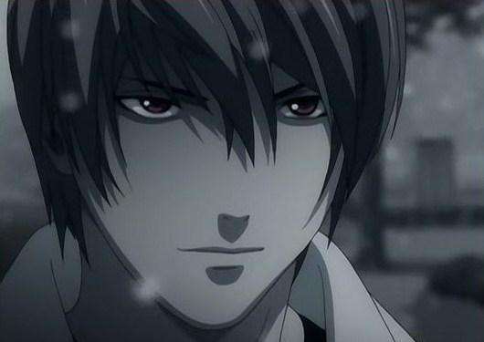

INICIO
CAPITULOS
DEATH NOTHE PERSONAJES
LIGHT YAGAMI
MISA AMANE
RYUK
REM
L. LAWLIET
NATHAN RIVER
MICHAEL KEEHL
KIYOMI TAKADA
TERU MIKAMI
Nayeli Ramírez Juárez todos los derechos reservados ©2015
|
LIGHT YAGAMI

Nació el 28 de febrero de 1986, Light tambien es conocido como
Kira es el personaje principal de esta serie. Light se caracteriza como un chico aburrido, confiado en su propio sentido de
la lógica y creatividad, él esta frustrado por la falta de justicia en el mundo creyendo que el mundo está podrido. Más tarde
al salir de clases encuentra una libreta negra llamada Death Note y este la recoge leyendo sus instrucciones de como usarla y
las reglas de la libreta, unos días despues lo visita un shinigami llamado Ryuk que es el dueño de la Death Nothe. Light usa
la Death Note con el fin de limpiar al mundo de la delincuencia y las injusticia, su meta es crear un mundo libre de criminales,
él es un hombre decidido y directo con lo que piensa, es capaz de llegar a extremos inimaginables con tal de lograr su misión
de ser el Dios del nuevo mundo.
Light constantemente intenta evadir las sospechas de L y de otros detectives manteniendo su identidad como Light Yagami y
como Kira. Se considera así mismo como un Dios y aparte es conocedor de la ley, diciendo que él es el más adecuado para juzgar
a la humanidad y dirigir un curso moral. Light es atacado por la policía cuando es acorralado y es detenido por ser el principal
Kira, Light no puede morir si no es por la Death Note de Ryuk, él corre lejos hasta perder a la policía llegando a un almacen
abandonado, se acuesta en unas escaleras y es ahi donde Ryuk decide que muera escribiendo su nombre completo en su Death Note.
|